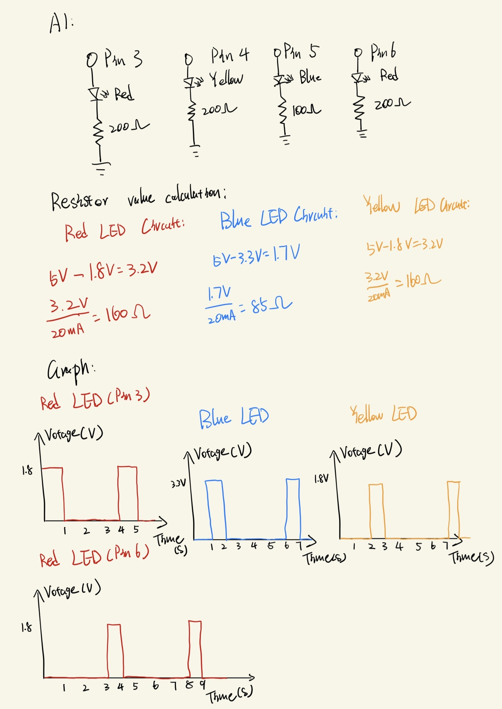

Circuit Photo

This is the circuit setup. The leftmost red LED is connected to port 3, the yellow LED to port 4, the blue LED to port 5, and the rightmost red LED to port 6.
Circuit schematic, resistance calculation and graph
This image shows the schematic, resistance calculation, and a graph of time vs. voltage. I used a resistor with a slightly higher resistance than calculated because the exact value wasn’t available, and I preferred to limit current for safety.
Circuit operation

This GIF shows the circuit in operation. Each LED blinks for one second in sequence from left to right, and the loop repeats indefinitely.
Code Snippet
int timer = 1000; // Duration of each LED blink in milliseconds (1000 ms = 1 second)
void setup() {
// Use a for loop to initialize each pin as an output
for (int thisPin = 3; thisPin < 7; thisPin++) {
pinMode(thisPin, OUTPUT); // Initialize pins from 3 to 6
}
}
void loop() {
// Turn each LED on and off in sequence
for (int thisPin = 3; thisPin < 7; thisPin++) {
digitalWrite(thisPin, HIGH); // Turn the LED on
delay(timer); // Keep it on for the set duration
digitalWrite(thisPin, LOW); // Turn the LED off
}
}
/*
Modified from the original example code:
created 2006
by David A. Mellis
modified 30 Aug 2011
by Tom Igoe
This example code is in the public domain.
https://docs.arduino.cc/built-in-examples/control-structures/ForLoopIteration/
*/
Additional Questions
1. See Circuit schematic, resistance calculation and graph image above.
2. The Arduino Uno has 13 digital ports that can be controlled independently. In theory, I could blink 13 LEDs individually. Assuming each LED draws 20 mA, the total current would be 260 mA. However, the board limits the total current to around 200 mA, meaning only about 10 LEDs can be lit simultaneously at the recommended 20 mA each.
4. In my testing, when each LED stayed on for only 5 ms, I could no longer distinguish the blinking. This aligns with the persistence of vision effect (~20 ms). Since my circuit has four LEDs blinking in sequence, each LED’s 5 ms on-time adds up to a total cycle time of about 20 ms.
5. I asked ChatGPT for advice on how to make my website look better and easier to read after finishing the initial layout. It suggested improvements such as dividing the page into sections, using the "code" tag instead of "p" for code blocks, and applying various style enhancements. These suggestions were very helpful, and I plan to apply what I learned to my future works.
All documentation for Assignment 1 is included above.